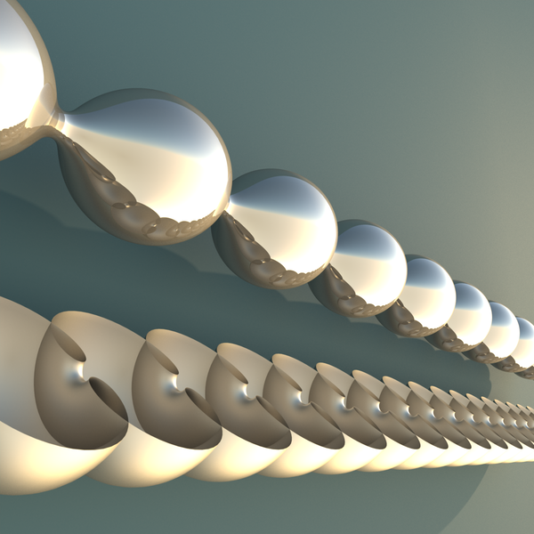
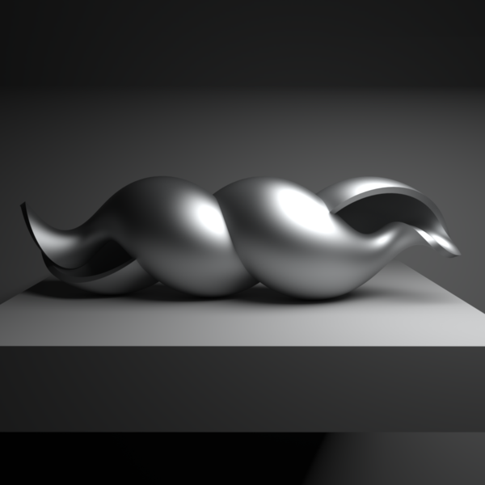

Constant mean curvature cylinders in euclidean 3-space
The Delaunay surfaces, being surfaces of revolution, are the simplest constant mean curvature cylinders [1]. Delaunay surfaces lie in associate families of twizzlers, which have screw-motion symmetry.

A Delaunay unduloid, and cutaway view of a Delaunay nodoid.

A twizzler, in the associate family of a Delaunay surface.The associate family of a Delaunay surface.A flow through the one-parameter family of Delaunay unduloids and nodoids.
References
C. Delaunay, Sur la surface de révolution dont la courbure moyenne est constante, J. Math. Pures et Appl. Sér. 16(1841), 309—320link.